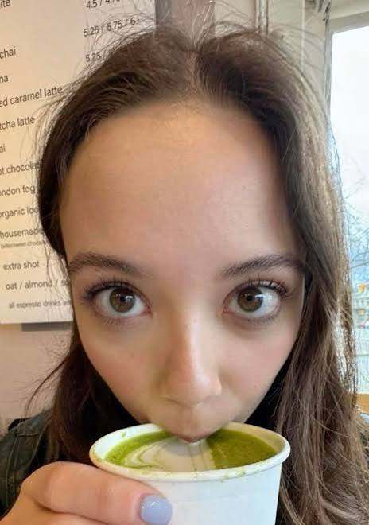
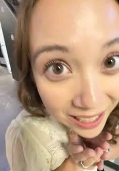

Renovadora e reveladora do mundo
A humanidade se renova no teu ventre.
Cria teus filhos,
não os entregues à creche.
Creche é fria, impessoal.
Nunca será um lar
para teu filho.
Ele, pequenino, precisa de ti.
Não o desligues da tua força maternal.
Que pretendes, mulher?
Independência, igualdade de condições...
Empregos fora do lar?
És superior àqueles
que procuras imitar.
Tens o dom divino
de ser mãe
Em ti está presente a humanidade.
Mulher, não te deixes castrar.
Serás um animal somente de prazer
e às vezes nem mais isso.
Frígida, bloqueada, teu orgulho te faz calar.
Tumultuada, fingindo ser o que não és.
Roendo o teu osso negro da amargura

